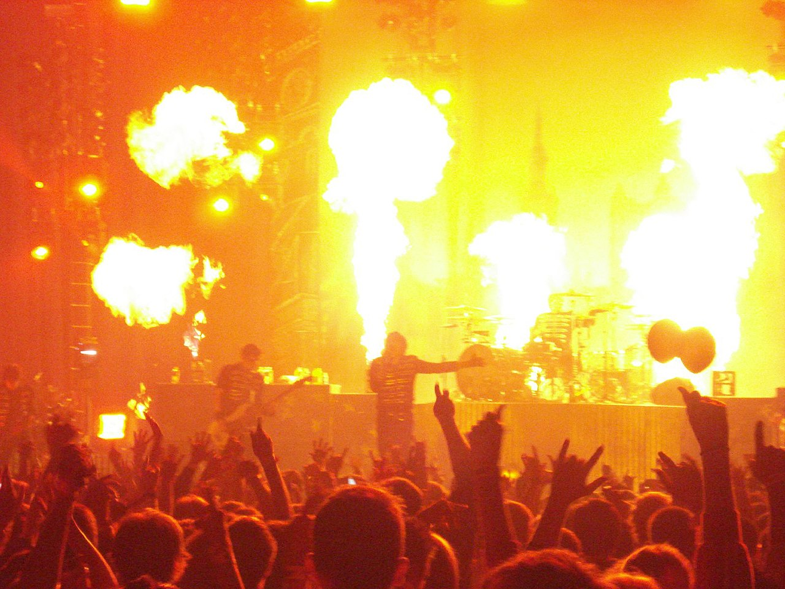
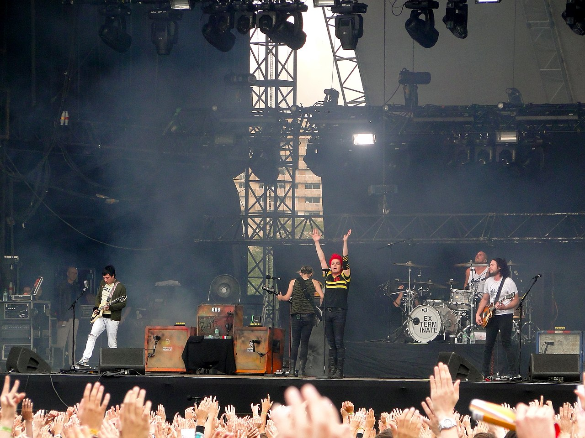
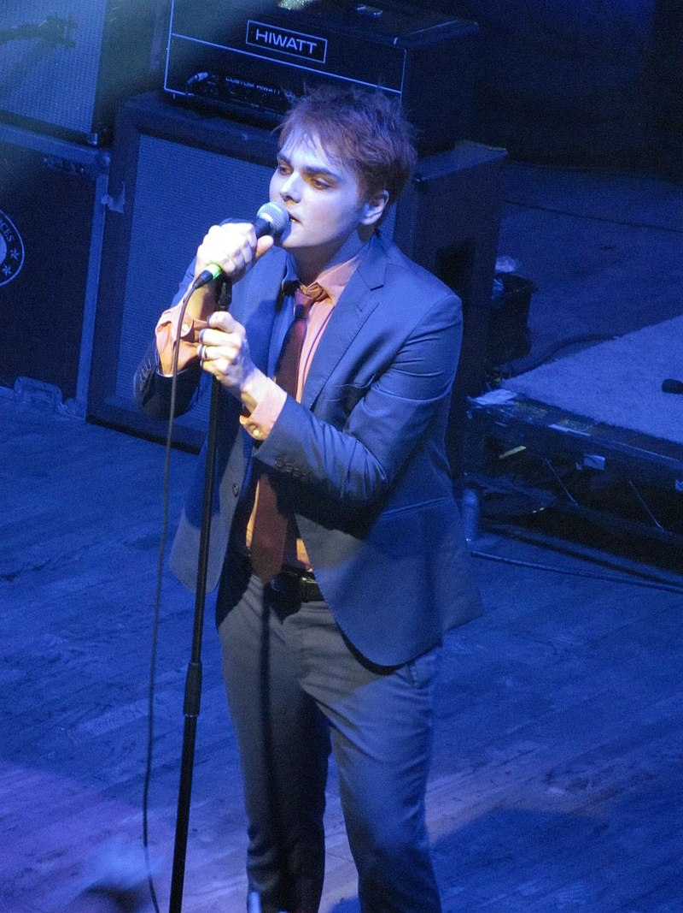
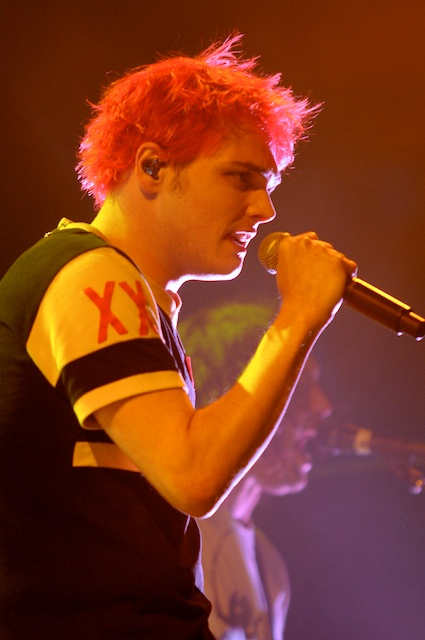

Historia
2001-2003: Primeros años y álbum debut
En 2001, Gerard Way trabajaba como dibujante de cómics, y fue testigo de los atentados del 11 de septiembre, tragedia que lo animó a intentar hacer algo significativo con su vida. Way le planteó a su amigo de secundaria Matt Pelissier la idea de formar un grupo, por lo que comenzaron a componer canciones juntos; la primera fue «Skylines and turnstiles», tema que escribió Way inspirado en los atentados del 11-S. Dos semanas después de los atentados la banda tuvo su primer ensayo, simplemente con Pelissier en la batería y Way cantando y tocando la guitarra. Way conoció a través de un amigo en común al guitarrista Ray Toro, y junto con Pelissier le invitaron a unirse al grupo. También se unió a la banda el hermano pequeño de Gerard, Mikey, que dejó los estudios para comenzar a tocar con ellos; él fue quien sugirió el nombre del grupo, que deriva del título Ecstasy: three tales of chemical romance, libro del escritor escocés Irvine Welsh. En diciembre de 2001[cita requerida] grabaron sus primeros tres demos, que incluían temas como «Bring more knives», que más tarde sería llamado «Our Lady of Sorrows».
En 2002, firmaron con el sello independiente Eyeball Records para grabar su primer álbum, titulado I brought you my bullets, you brought me your love. La banda comenzó a grabar la placa en la misma sala con Thursday y Pencey Prep; fue entonces cuando Frank Iero, vocalista y guitarrista de Pencey Prep, se interesó en la banda y se integró a ella (después de que su grupo se separara por un conflicto con el teclista), dejando de lado sus estudios en la universidad. Aunque Iero se integró al último en la banda, alcanzó a tocar la guitarra en dos temas: «Early sunsets over Monroeville» y «Honey, this mirror isn't big enough for the two of us». El disco fue editado en julio de 2002. Gerard Way dijo que las letras eran una manera de tratar los problemas de depresión con los que había lidiado gran parte de su vida y que lo habían llevado al alcoholismo e incluso a contemplar el suicidio, como él mismo ha afirmado en varias entrevistas. Estos problemas se reflejan en títulos como «Honey, this mirror isn't big enough for the two of us», «Demolition Lovers», «Drowning lessons», «Our Lady of Sorrows» y «Vampires will never hurt you». Después de escuchar el álbum completo, Gerard dijo que el próximo álbum no lo haría tan siniestro.
2004-2006: El éxito de Three cheers for sweet revenge
En 2004, My Chemical Romance firmó con Reprise Records, empresa discográfica de Warner Music. La banda comenzó a trabajar en su segundo disco, y el 8 de junio de 2004, con un estilo más maduro y consolidado, publicaron Three cheers for sweet revenge, especialmente dedicado a la abuela de Gerard y Michael Way, Elena Lee Rush, que murió dos semanas antes de la publicación del álbum. Ella les había apoyado toda la vida y le enseñó a cantar, actuar y dibujar a Gerard. La primera canción del CD, «Helena», está dedicada a ella. Fue el comienzo de su ascenso en la música, con el que se dieron a conocer en los Estados Unidos, Latinoamérica, Europa y Japón. Las canciones más reconocidas son «Helena», «I'm not okay (I promise)» y «The ghost of you», teniendo todas ellas su respectivo videoclip. De hecho, el video de «Helena» fue incluido en un ranking anual de MTV Latinoamérica, alcanzando la primera posición como el más solicitado del año 2005.
En comparación con I brought you my bullets, you brought me your love, el carácter del segundo álbum es un poco menos ‘agresivo’, en el sentido de que es menos melancólico, disonante y depresivo, pero conserva aún la misma agresividad y la misma fuerza tan característica del estilo que forjaron con su primer disco. La muerte era un elemento claramente recurrente en muchas —si no todas— las canciones de la banda por ese entonces, característica presente en todos sus discos. Desde temas como «The ghost of you» y «To the end» que claramente evocan escenarios fúnebres, hasta «Thank you for the venom» y «Cemetery drive», que tratan de una manera franca y no muy sutil el suicidio como alternativa a una vida de miseria y depresión, My Chemical Romance ha demostrado en sus letras una cierta fascinación con la muerte. Como se mencionó, el origen de esta obsesión es la experiencia personal del mismo Gerard: él se interesó en la muerte a la temprana edad de ocho años, cuando supo que en algún momento toda persona debía morir. Para este, su segundo álbum, la venganza toma casi igual relevancia, lo que se ve reflejado en el mismo título del disco, en canciones como «It's not a fashion statement, it's a fucking deathwish» y «I'm not okay (I promise)» y también en varios logos publicitarios, ropa y accesorios que la banda puso a la venta.
Fue durante este tiempo en el que la banda sustituyó a su baterista Matt Pelissier por Bob Bryar. Razones expuestas por el grupo han sido que no estaba trabajando debidamente, y que la situación profesional y emocional no funcionaba.Bob fue presentado como miembro oficial en agosto de 2004, durante un concierto en Japón.
En 2005 la banda se unió a la primera gira Taste of Chaos, y luego fueron teloneros de Green Day en su gira American Idiot. Ese mismo año, se unieron con The Used para hacer una versión de la canción «Under pressure», original de la banda Queen junto con David Bowie, y así recoger fondos para los damnificados del maremoto que azotó las costas de Indonesia, India, Malasia, Tailandia, algunas otras islas cercanas y algunos países africanos ese mismo año. La canción fue incluida como bonus track en una reedición del álbum In love and death, de The Used. También coencabezaron el Warped Tour 2005 junto a Fall Out Boy durante dos meses, y más tarde encabezaron su primera gira propia, acompañados por Alkaline Trio y Reggie and the Full Effect, alrededor de Estados Unidos. Ese mismo año se publicó el documental My chemical diary, de MTV diary, que muestra entrevistas con los integrantes durante el Warped Tour.
El 21 de marzo de 2006, publicaron el DVD en vivo Life on the murder scene. El primer disco de video incluye la historia de la banda desde sus inicios, relatada por sus integrantes en entrevistas y con apoyo de filmaciones. El segundo trae los videoclips musicales, los making of de sus videos y presentaciones en vivo. Este material también incluye un tercer disco (disco compacto) con sus más importantes canciones hasta entonces, tocadas en vivo, y con dos demos y una canción de estudio nunca antes editada, llamada «Desert song». El álbum obtuvo la certificación de doble platino en los Estados Unidos
2006-2008: The Black Parade
La banda comenzó a grabar su tercer álbum de estudio el 10 de abril de 2006 con Rob Cavallo, productor de muchos de los álbumes de Green Day. La banda filmó los videos para los dos primeros sencillos del disco, «Welcome to the Black Parade» y «Famous last words», para luego ser editados el 26 de septiembre de 2006 y el 22 de enero de 2007, respectivamente, y fueron dirigidos por Samuel Bayer. El 22 de agosto de 2006, llegando en ataúdes, la banda dio un avance del tercer disco en el Hammersmith Palais de Londres (Inglaterra). El 2 de septiembre de 2006, la canción «Welcome to the Black Parade» fue puesta en sus páginas de MySpace y PureVolume.
El 23 de octubre la banda editó su tercer álbum de estudio, The Black Parade. Dijeron que The Black Parade es su alter ego para este disco, lo que se notó en el cambio a un estilo de rock más clásico y propio de los años setenta, y también en el look de los miembros, especialmente el de Gerard Way, quien tiñó su pelo de un color rubio claro de apariencia algo enfermiza debido a que quería parecer como el personaje principal de la trama del álbum. En una conferencia de prensa previa al estreno, describieron el álbum como «épico, teatral, orquestal y grandioso». Mencionaron incluso que este era el álbum por el que querían ser recordados
El álbum gozó de éxito en el mercado y en la crítica: es disco de platino en Estados Unidos, doble disco de platino en el Reino Unido y disco de oro en Chile, Argentina y México. Por otro lado, My Chemical Romance fue premiado en diversas categorías por la revista Kerrang!, incluyendo también a su álbum The Black Parade entre los cuatro mejores del año. Asimismo, la revista Rolling Stone le asignó el vigésimo puesto al disco en su lista de los cincuenta mejores álbumes de 2006, y meses más tarde esta misma revista le otorgaría a la canción «Welcome to the Black Parade» una mención honrosa en su lista de «Las 100 más grandes canciones de guitarra de todos los tiempos».
Ya en febrero de ese año, el grupo comenzó en los Estados Unidos la gira The Black Parade World Tour en la ciudad de Mánchester (Nuevo Hampshire). Desde este tour en adelante la banda integró a James Dewees —del grupo Reggie and the Full Effect— para tocar el teclado/sintetizador. Además, serían teloneados en varias presentaciones por los grupos Rise Against, Thursday, Muse y, finalmente, por Billy Talent y Drive By.
La banda fue parte de la gira Projekt Revolution, encabezada por Linkin Park, junto a bandas como Placebo, Mindless Self Indulgence, Saosin, Taking Back Sunday y HIM. Gerard Way ha dicho que esta fue la mejor gira en que han participado.
En los conciertos del 4 y 7 de octubre de 2007 en México, Way interpretó al Paciente por última vez. La agrupación destacó con las canciones «Mama» y «Famous last words», las cuales presentaban un espectáculo de fuego y pirotecnia muy bien realizado. Al final Way expresó en perfecto español: «¡Gracias, México! ¡gracias, Monterrey!».
Con una puesta en escena sencilla y sin efectos de pirotecnia, My Chemical Romance tocó en Sudamérica en febrero de 2008; presentaron shows de una hora y media de duración, e incluyeron en el repertorio canciones poco usuales como «My way home is through you», «Kill all your friends» y «Desert song». El guitarrista rítmico, Frank Iero, abandonó la gira sudamericana después de las cuatro presentaciones en Brasil, por lo que Matt Cortez lo reemplazó en Argentina, Chile y Venezuela. En particular, a pesar de que su presentación en Chile recibió algunas críticas negativas en relación con la interpretación y al sonido, el concierto contó con ferviente participación de sus once mil espectadores, y fue descrito por la prensa como «la escena de mayor efervescencia de la historia del Arena Santiago»
Para cerrar su gira mundial, y acompañados por los grupos Billy Talent y Drive By, realizaron treinta conciertos más por Estados Unidos. La banda expresó querer alejarse de los grandes conciertos por un tiempo; alegó que cuando empezaron, podían sentir a su público justo enfrente de ellos, y que querían que eso ocurriera de nuevo.
My Chemical Romance cerró su gira The Black Parade World Tour en mayo de 2008, con un gran concierto en Nueva York, en el Madison Square Garden; este recinto fue elegido especialmente para el cierre de la gira, ya que antes de dedicarse a la música los hermanos Way asistieron ahí a conciertos que les fueron muy inspiradores. El término de la gira supuso para la banda la incertidumbre de si continuarían juntos; Frank Iero ha comentado: «Siempre dijimos que cuando dejara de ser entretenido, renunciaríamos. Y estaba empezando a ser no entretenido. Honestamente sentía en lo profundo que iba a recibir un llamado de Gerard y que no seguiríamos más».
El 30 de junio de 2008 se lanzó su segundo DVD oficial, The Black Parade is dead!, que incluye dos conciertos: uno dado en Ciudad de México —frente a veinte mil espectadores— el 7 de octubre de 2007, siendo ese concierto el último en que My Chemical Romance actuó como The Black Parade; el otro es un espectáculo mucho más íntimo, realizado ese mismo mes ante solo doscientas personas en Hoboken (Nueva Jersey), que incluye una combinación de canciones de su segundo y su tercer disco, además de una nueva canción sin título.
2009-2012: Danger days: the true lives of the Fabulous Killjoys
El grupo versionó una canción de Bob Dylan llamada «Desolation row»,lo cual fue hecho especialmente para los créditos y la banda sonora de la película Watchmen (2009), adaptación del cómic homónimo escrito por Alan Moore y publicado en el año 1986. En Los Ángeles grabaron un video para el tema, que fue estrenado el 30 de enero de 2009, cuatro días después que el sencillo. Gerard Way comentó que en esta canción quisieron acercarse al estilo del grupo británico de punk Sex Pistols.Con posterioridad, el 10 de abril del mismo año, la banda editó un álbum de video llamado ¡Venganza!, que contiene la segunda parte del concierto en Ciudad de México del 7 de octubre de 2007, en la que tocaron canciones de su segundo disco. Este material, de treinta y siete minutos de duración, fue comercializado en memorias USB con forma de bala.
Según anunciaron en su página web, My Chemical Romance comenzó a grabar su cuarto álbum de estudio el día jueves 11 de junio de 2009, con la pretensión de «redefinir el rock moderno».Para este disco contaron inicialmente con la producción de Brendan O'Brien, que anteriormente había trabajado con AC/DC, Bruce Springsteen y Pearl Jam, entre muchos otros.
Los días 31 de julio y 1 de agosto de 2009 marcaron el regreso de la banda a las presentaciones en vivo después de más de un año de ausencia, con dos pequeños conciertos en un local nocturno de Los Ángeles. Ahí tocaron tres nuevas canciones: «Death before disco», «Kiss the ring» y «The drugs», temas en los que se observa un destacable cambio del grupo hacia un sonido más agresivo, que la revista Spin compara con el grupo sueco The Hives.Pocos días después, My Chemical Romance viajó a Japón para encabezar la décima edición del festival Summer Sonic, junto al grupo Linkin Park y a la cantante Beyoncé, sumando otros dos conciertos.
El 3 de marzo de 2010, el grupo comunicó en su página oficial la separación de Bob Bryar,quien fue por más de cinco años el batería de la banda. Tiempo más tarde, el productor Rob Cavallo comentaría que Bryar estaba obstruyendo el proceso creativo del nuevo álbum.
A fines de marzo de 2010, Mikey Way anunció en el sitio web de la banda que habían alcanzado una «emocionante fase final de grabación». Gerard Way se refirió a este proceso de grabación como «el segundo intento del álbum», debido a que el primero no les convenció. Para estas segundas sesiones de grabación la banda decidió trabajar —al igual que en el álbum The Black Parade— con el productor Rob Cavallo.
La totalidad de las canciones del álbum, titulado Danger days: the true lives of the Fabulous Killjoys, se hicieron públicas por primera vez el día martes 16 de noviembre, en un video mostrado en la página web de la banda; en el clip, las canciones eran presentadas en un ficticio programa radial, conducido por el personaje del álbum Dr. Death Defying. El álbum fue puesto a la venta el viernes 19 de noviembre, en algunos países. El día del lanzamiento en Estados Unidos la banda dio un concierto en House of Blues de Los Ángeles, transmitido en vivo a través de MTV.com.
La gira mundial para la promoción de Danger days fue The World Contamination Tour, que inició en octubre de 2010; para estos conciertos se integró a la banda como suplente Michael Pedicone, exbaterista de The Bled, aunque más tarde él sería expulsadonota y reemplazado por Jarrod Alexander, que antes tocaba en el grupo Death By Stereo. Entre los meses de agosto y octubre de 2011 la banda formaría parte de la gira Honda Civic Tour 2011, que encabezaron junto con el grupo Blink-182; este tour solo contemplaría presentaciones en los Estados Unidos y Canadá.
En abril de 2011 publicaron una nueva versión de la canción «SING», llamada «#SINGItForJapan», con el objetivo de ayudar a las víctimas del terremoto y tsunami de Japón ocurridos en marzo del mismo año.
2012: Preparación de un quinto álbum
En febrero de 2012, los miembros de My Chemical Romance revelaron que estaban construyendo un estudio propio en Los Ángeles para grabar su quinto álbum. La banda estaría trabajando con el ingeniero Doug McKean, y también con la diseñadora Colleen Atwood, con quienes habían trabajado previamente en los discos The Black Parade y Danger days.
En octubre de 2012, Frank Iero declaró que habían escrito muchas canciones, algunas de las cuales habían grabado apropiadamente; dijo también que no estaban cerca de terminar el disco «en modo alguno» y que era un disco «elaborado» que contenía «un poco de amargura». Posteriormente, Mat Devine —vocalista de la banda Kill Hannah— hizo un dueto con Gerard Way, y tuvo la oportunidad de escuchar cuatro canciones del quinto álbum de la banda, cuyo sonido describió como «ligeramente un nuevo territorio» y «superrefrescante, pero, al mismo tiempo, familiar de la manera en que quieres que lo sea».
Referido por la banda como «MCR 5», este era un álbum conceptual acerca de un grupo de padres que asistían a terapia grupal porque habían perdido a sus hijos de alguna manera trágica. Estaba presupuestado que este fuera el último álbum en la carrera de la banda.46 Calificado por James Montgomery de MTV.com como uno de los discos de rock más esperados de 2013, la única canción de este que se publicaría —en 2014— sería «Fake your death».
2012-2019: Último concierto y separación
My Chemical Romance dio su último concierto el 19 de mayo de 2012, en la ciudad de Asbury Park (Nueva Jersey). Acerca de esta última presentación, el vocalista Gerard Way comentó: «El concierto es... bueno. No espectacular, ni malo, solo bueno. [...] Interpreto y canto, semiautomáticamente, y algo está mal. Estoy actuando. Nunca actúo en el escenario, ni siquiera cuando pareciera que lo hago». Finalmente, el día 22 de marzo de 2013, a través de la página oficial del grupo en un comunicado titulado simplemente «My Chemical Romance», anunciaron su renuncia con las siguientes palabras:
Haber estado en esta banda durante los últimos doce años ha sido una verdadera bendición. Hemos ido a sitios a los que nunca pensamos que íbamos a ir. Hemos podido ver y experimentar cosas que nunca imaginamos que fuesen posibles. Hemos compartido el escenario con gente a la que admiramos, gente que nos maravilla y, lo mejor de todo, nuestros amigos. Y ahora, como todas las grandes cosas, ha llegado el momento de que termine. Gracias a todos por vuestro apoyo, y por ser parte de la aventura.
My Chemical Romance
Momentos después del anuncio, Way comentó que «por sobre cualquier tristeza, lo que más siento es orgullo». Posteriormente, el día 24 de marzo, el cantante publicó una poética y extensa carta, que cierra de la siguiente manera: «My Chemical Romance se terminó. Pero nunca podrá morir. Está vivo en mí, en mis compañeros, y está vivo en todos ustedes. Siempre lo supe, y creo que ustedes también. Porque no es una banda: es una idea. Con amor, Gerard Way».
En septiembre de 2012, el guitarrista Frank Iero había informado que lanzarían diez canciones que fueron creadas para el cuarto disco pero que finalmente no fueron incluidas en él. Se publicaron dos canciones mensualmente, como dobles sencillos en discos de vinilo o descarga digital, entre octubre de 2012 y febrero de 2013. La ruptura se anunció al mes siguiente de la publicación de «Surrender the night» y «Burn bright», las últimas dos canciones del álbum de descartes: Conventional weapons.
En un evento realizado en la Casa de la Ópera de Sídney, en octubre de 2013, Way contó que el concepto del quinto disco, acerca de un grupo de padres reunidos en una terapia grupal, «no era la historia que yo quería contar». Pero, en enero de 2014, comentó que «esa, definitivamente, no es la razón por la que personalmente dejé de hacer [el álbum], definitivamente tuvo que ver mucho con el tener que hacerlo. Comienza a sentirse como que el intercambio económico siempre está ahí para ti, y no tienes ya ninguna comunicación que hacer en relación a ello; esa sensación fue mucho más fuerte que el no querer contar una historia acerca de un grupo de apoyo, y en realidad sí quiero contar esa historia algún día».
A fines del año 2013, se anunció que en 2014 la banda publicaría May death never stop you, un álbum recopilatorio de grandes éxitos que incluye, además de estos, los primeros demos grabados en la historia de la banda (conocidos como los Attic demos) y una de las canciones grabadas para el inconcluso quinto álbum de estudio, titulada «Fake your death». El disco salió a la venta el 25 de marzo de 2014, mientras que «Fake your death» se publicó como sencillo el 17 de febrero.